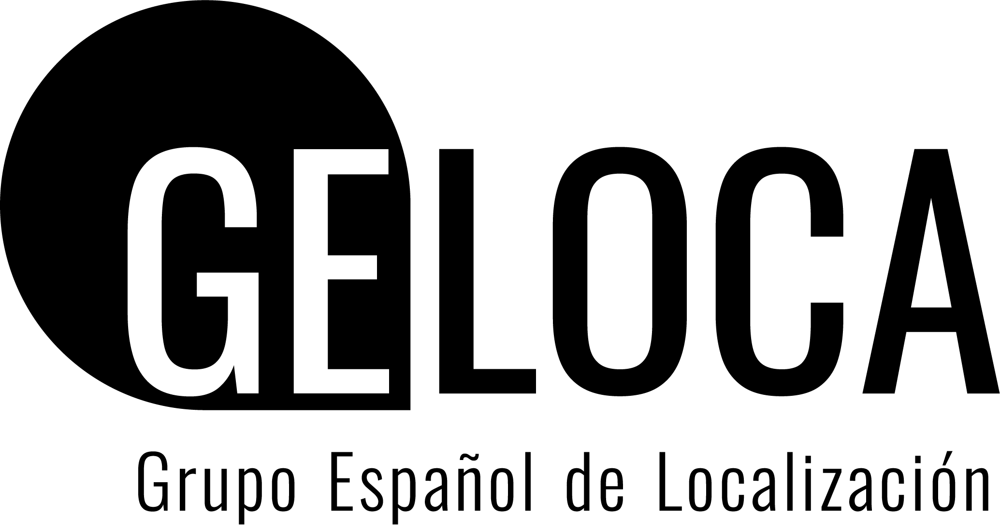
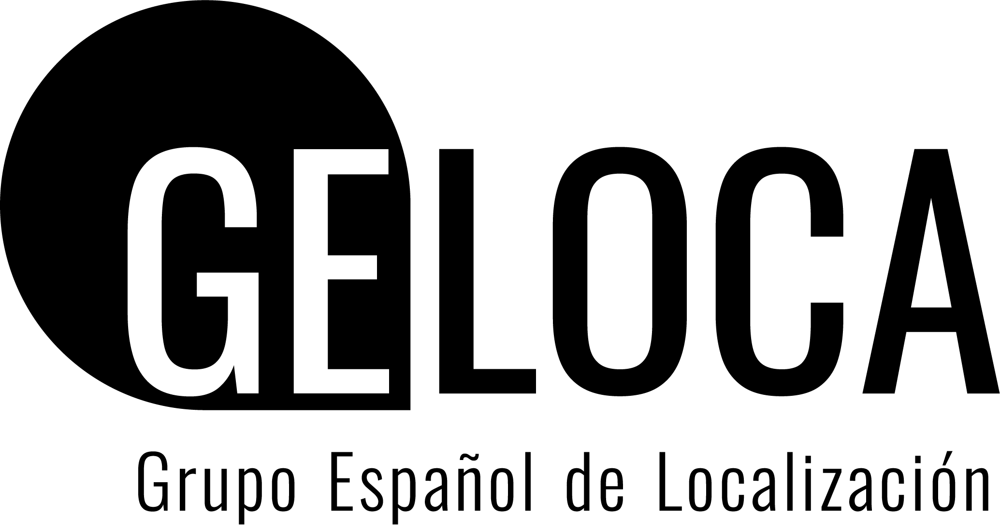

Bienvenido
La Red de Localización está formada por distintos grupos de investigadores de varias universidades que trabajan en el campo de la localización y problemas relacionados. Además de los modelos de localización, se estudian modelos de rutas y transporte, diseño de redes y logística, entre otros temas. La Red fue creada en el año 2002 a partir del Grupo Español de Localización (GELOCA, http://geloca.seio.es/), estando financiada desde su inicio por el Gobierno Español. Desde 2002 hasta la actualidad, la Red ha estado coordinada por Juan A. Mesa (Universidad de Sevilla), Elena Fernández (Universitat Politècnica de Catalunya), Alfredo Marín (Universidad de Murcia), Dolores R. Santos-Peñate (Universidad de Las Palmas de Gran Canaria), Antonio M. Rodríguez-Chía (Universidad de Cádiz), Maria Albareda (Universitat Politècnica de Catalunya) y Víctor Blanco (Universidad de Granada). Desde 2010, entre otras actividades, la Red organiza anualmente el International Workshop on Locational Analysis and Related Problems, abierto a la participación de personas interesadas en los temas relacionados con la localización.
@IWOLOCA
 
